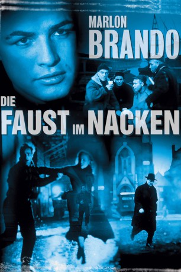

#7227 Die Faust im Nacken
Alternativ: On the Waterfront
Auszeichnungen: 8 Oscars gewonnen für 4 Oscars nominiert 5 GoldenGlobes gewonnen 1 BAFTA-Awards gewonnen
 
 IMDB-Wertung: 8.2 / 10
IMDB-Wertung: 8.2 / 10  IMDB-TOP-Platzierung: 147
IMDB-TOP-Platzierung: 147  Metascore: 0
Metascore: 0 
Marlon Brando spielt die Hauptrolle des Terry Malloy, einem gescheiterten Preisboxer, der dank der Beziehungen seines Bruders Charley, ein Anwalt für eine korrupte Dockarbeiter-Gewerkschaft, als Botenjunge für die Mafia angestellt wird. Nachdem er einen anderen Hafenarbeiter und Freund in den Tod gelockt hat, um ihn von einer Aussage gegen den Vorarbeiter Johnny Friendly abzuhalten, erwecken die Bitten der Schwester des Toten und eines engagierten Priesters Terrys Schuldbewusstsein. Trotzdem er durch Friendlys Schläger brutal zugerichtet wird, bewegt die Liebe Terry dazu, Vergeltung zu üben, indem er die Untersuchung einer Verbrechenskommission gegen die korrupte Dockarbeiter-Gewerkschaft unterstützt.
Jahr: 1954
Dauer: 107 Minuten
FSK: 16
Land: USA Studio: ColumbiaTonspuren: DD2.0 - ,
Untertitel: Deutsch,
Auflösung: 1080p (1808x1080) Größe: 7823 MB
Genre: Thriller, Drama, Krimi
Regisseur:  Elia Kazan
Elia Kazan
Drehbuch: Budd Schulberg
Soundtrack:
Darsteller:
 Marlon Brando als Terry Malloy
Marlon Brando als Terry Malloy Karl Malden als Father Barry
Karl Malden als Father Barry Lee J. Cobb als Johnny Friendly
Lee J. Cobb als Johnny Friendly Rod Steiger als Charley Malloy
Rod Steiger als Charley Malloy Leif Erickson als Glover
Leif Erickson als Glover James Westerfield als Big Mac
James Westerfield als Big Mac Eva Marie Saint als Edie Doyle
Eva Marie Saint als Edie Doyle Martin Balsam als Gillette , uncredited
Martin Balsam als Gillette , uncredited Michael V. Gazzo als Bit , uncredited
Michael V. Gazzo als Bit , uncredited Fred Gwynne als Slim , uncredited
Fred Gwynne als Slim , uncredited Pat Hingle als Jocko , uncredited
Pat Hingle als Jocko , uncredited- Scottie MacGregor als Mother of a Longshoreman , uncredited
 Nehemiah Persoff als Cab Driver , uncredited
Nehemiah Persoff als Cab Driver , uncredited- Johnny Seven als Longshoreman , uncredited
- Pat Henning als Kayo Dugan
- Tony Galento als Truck
- Tami Mauriello als Tillio
- John F. Hamilton als 'Pop' Doyle
- John Heldabrand als Mott
 Rudy Bond als Moose
Rudy Bond als Moose- Don Blackman als Luke
- Arthur Keegan als Jimmy
- Abe Simon als Barney
- Dan Bergin als Sidney , uncredited
- Zachary Charles als Dues Collector , uncredited
- Jere Delaney als Bit Part , uncredited
- Robert Downing als Bit , uncredited
- Thomas Handley als Tommy Collins , uncredited
- Anne Hegira als Mrs. Collins , uncredited
- Barry Macollum als Johnny's Banker , uncredited
- Tiger Joe Marsh als Longshoreman , uncredited
- Edward McNally als Bit Part , uncredited
- Mike O'Dowd als Specs , uncredited
Datei: X:\1950-1959\Faust im Nacken, Die (1954, FSK16, 1808x1080).mkv seit 09.10.2017
Festplatte: HD 1900-1970
 Es gibt insgesamt 141 Filme in der Gruppe '1950-1959'
Es gibt insgesamt 141 Filme in der Gruppe '1950-1959'